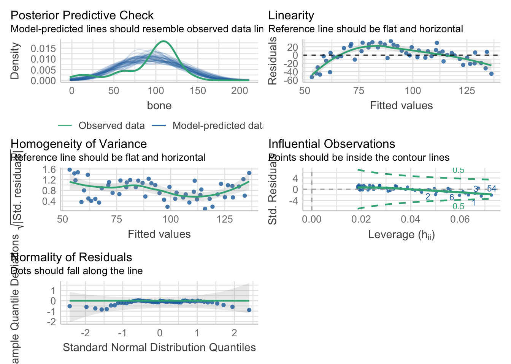
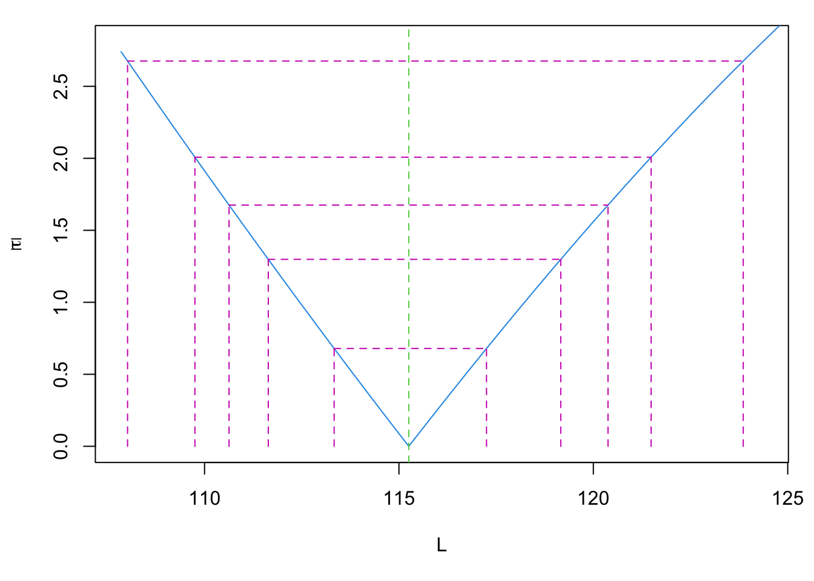

library(ggplot2)
library(patchwork)
library(performance)
library(nlraa)13 Modelos no lineales
13.1 Librerías
13.2 Otro tipo de relaciones
En las sesiones anteriores hablamos de modelos en los cuales asumimos que hay una relación lineal entre nuestras variables; es decir, una variable incrementa o disminuye de manera constante en relación a la otra, pero también mencionamos que esto no siempre es así. Aquí es justo donde entra la modelación no lineal. En un problema de regresión lineal simple utilizamos alguna función de pérdida y un algoritmo de optimización para encontrar los valores del intercepto y la pendiente, según nuestros datos. La regresión no lineal es, en escencia, lo mismo: ajustar parámetros de un modelo a partir de los datos. La única diferencia es que el modelo puede describir cualquier tipo de relación funcional entre las variables involucradas. Puede ser algo tan simple como un modelo potencial de un solo parámetro hasta algo tan complicado como el modelo de mortalidad de Chen y Watanabe (1988), o incluso más.
Aplicaciones biológicas de este tipo de modelos hay muchas: a) estimación de la riqueza específica de un sitio, b) modelar el crecimiento de organismos, c) relaciones talla-peso, etc., etc., etc. En esta sesión revisaremos algunos ejemplos de estos modelos y cómo aplicarlos e interpretarlos.
Sobre esto último, implementar estos modelos en R es sumamente sencillo. Los requerimientos son a) conocer la ecuación, b) escribirla como una operación y c) establecer algunos valores iniciales para iniciar la búsqueda. Para esto utilizaremos la función nls(formula, data, start) (Nonlinear Least Squares).
13.3 Violación del supuesto de linealidad
Tenemos dos razones básicas que nos pueden llevar a pensar en un modelo no lineal. La primera es que, de entrada, sepamos que nuestros datos deben de ser modelados de esa manera, principalmente debido a conocimiento previo del problema. La segunda es que se viole el supuesto de linealidad de los residuales. La primera es auto-explicativa, por lo que obviaré el escenario, pero la segunda no lo es tanto. Revisemos entonces un primer modelo para describir la longitud de mandíbulas de tiburones a partir de la edad de los mismos:
jaws <- read.csv("datos/jaws.csv")
lm_jaws <- lm(bone~age, data = jaws)
performance::check_model(lm_jaws)
En términos de nuestros datos:
jaws_plot <- ggplot(data = jaws, aes(x = age, y = bone)) +
geom_point(color = "dodgerblue4") +
theme_bw() +
labs(title = "Modelo lineal",
x = element_blank(),
y = element_blank())
lm_plot <- jaws_plot + geom_smooth(method = "lm",
color = "#ff7f0e")
lm_plot`geom_smooth()` using formula 'y ~ x'Tenemos un leve problema con el supuesto de linealidad. Ni por asomo nuestros residuales están cerca de la linea en 0, de hecho, forman una especie de “parábola”. Esto quiere decir que debemos de considerar otra aproximación, pues la descripción del modelo lineal no es adecuada. Ok, entonces ¿qué modelo aplicamos? Habrá que echar mano de algún modelo de crecimiento.
13.4 Modelos de crecimiento
Estos modelos se pueden construir con cualquier medida de longitud o peso, y en este caso utilizaremos longitudes de huesos de una especie de tiburón. Modelos para el crecimiento hay muchos, algunos son Gompertz (1832), crecimiento logístico, Morgan-Mercer-Flodin, Weibull o Richards, de los cuales algunos tienen variantes con más o menos parámetros. Te recomiendo ampliamente revisar este enlace para conocer un poco más sobre estos modelos (ecuaciones, aplicaciones, supuestos, etc.). Por desgracia, no tenemos tiempo suficiente para hablar de todos ellos, así que exploraremos el más conocido: el modelo de crecimiento individual de Von Bertalanffy.
13.4.1 Modelo de Von Bertalanffy (1938)
Este modelo lo derivó Von Bertalanffy (VB) desde algunos parámetros fisiológicos bastante simples. Es, posiblemente, el modelo de crecimiento más utilizado en estudios de pesquerías. Este modelo asume que la tasa de crecimiento de un organismo declina con la tasa de cambio de la longitud, y que puede ser descrito con el modelo:
\[ \frac{dl}{dt} = K(L_\infty - l) \]
donde \(t\) es el tiempo, \(l\) es la longitud (o cualquier otra medida de tamaño), \(K\) es la tasa de crecimiento, \(L_\infty\), que representa la longitud asintótica a la que el crecimiento es 0. Si integramos esta ecuación, obtenemos:
\[ L(t) = L_\infty(1-e^{-K(t-t_0)}) \]
En donde el parámetro \(t_0\) se incluye para ajustar la ecuación para la talla inicial del organismo, y se interpreta como la edad a la cual el organismo tendría tamaño 0. Este modelo, entonces, consta de 3 parámetros (\(L_\infty\), \(K\), y \(t_0\)); sin embargo, existe una parametrización alternativa que cambia \(t_0\) por \(L_0\); es decir, la talla del individuo al nacer:
\[ L(t) = L_\infty - (L_\infty - L_0)e^{-Kt} \]
Utilicemos la primera variante por conveniencia al declarar el modelo:
vb_jaws <- nls(bone~L*(1-exp(-K*(age-t))),
data = jaws,
start = list(L = 140, K = 0.5, t = 0.1))
vb_jawsNonlinear regression model
model: bone ~ L * (1 - exp(-K * (age - t)))
data: jaws
L K t
115.2527 0.1235 0.2378
residual sum-of-squares: 8897
Number of iterations to convergence: 6
Achieved convergence tolerance: 1.998e-06Gráficamente:
jaws$vb <- predict(vb_jaws, jaws$age)
jaws_plot +
# Nota que los datos de y los pasamos directamente
# desde el data.frame:
geom_line(aes(y = jaws$vb),
color = "#ff7f0e") +
theme_bw() +
labs(title = "Modelo Von Bertalanffy")Podemos también utilizar directamente geom_smooth para construir el gráfico. OJO ggplot pasa nuestros datos como x y y, no como los nombres de las variables originales. Adicionalmente, podemos utilizar la librería patchwork para poner ambos gráficos (lineal y vb) en un solo gráfico:
vb_plot <- jaws_plot +
geom_smooth(method = "nls",
formula = y~L*(1-exp(-K*(x-t))),
method.args = list(start = list(L = 140,
K = 0.5,
t = 0.1)),
se = F,
color = "#ff7f0e",
size = 0.5) +
labs(title = "Modelo Von Bertalanffy")
lm_plot + vb_plot +
plot_annotation(title = "Relación long. mandíbula ~ edad",
caption = "Datos: JAWS")`geom_smooth()` using formula 'y ~ x'
Visualmente es evidente que el modelo VB está mejor ajustado que el modelo lineal y, de hecho, podemos comparar ambos modelos utilizando teoría de la información, en particular el criterio de información de Akaike, del cual hablaremos con mayor detalle en la sesión de Modelos Lineales Generalizados. Por lo pronto, bástete saber que seleccionaremos el modelo con el menor AIC, que, como esperábamos, es el modelo VB:
AIC(lm_jaws, vb_jaws)El ajuste mejoró notablemente, pero ¿cómo interpretamos el modelo? La respuesta está en la descripción que vimos antes, pero trasladémosla a este caso particular:
vb_jawsNonlinear regression model
model: bone ~ L * (1 - exp(-K * (age - t)))
data: jaws
L K t
115.2527 0.1235 0.2378
residual sum-of-squares: 8897
Number of iterations to convergence: 6
Achieved convergence tolerance: 1.998e-06Tenemos una \(L_\infty\) de 115.25; es decir, la longitud a la cual la especie analizada deja de crecer (tasa de crecimiento = 0) es de 115.25 cm. Esto podemos verlo gráficamente:
pars_plot <- vb_plot +
geom_hline(yintercept = coef(vb_jaws)["L"],
color = "firebrick",
linetype = "dashed")
pars_plot
Este parametro normalmente es de interés, pues representa la longitud máxima promedio, y puede ser útil en la evaluación de poblaciones sujetas a explotación, por ejemplo.
El siguiente parámetro es \(K\); es decir, la constante de crecimiento, cuyas unidades son unidades recíprocas de tiempo (e.g. años\(^-1\)). Esto hace que su interpretación sea muy poco amigable; sin embargo, podemos interpretarla en términos de vidas medias (ln 2/k) con unidades de tiempo. El origen del concepto de la vida media se encuentra en la química, particularmente en el decaimiento isotópico, de modo que la vida media de un isótopo representa el tiempo que toma a una concentración x del mismo en reducirse a la mitad, y ha sido extendida para expresar periodos de tiempo que expresen reducciones del 50% de muchas otras cosas. En este caso, la interpretación estaría más relacionada con la ecuación diferencial que vimos al inicio, en el sentido de que es el tiempo que toma que la tasa de crecimiento se reduzca en un 50%:
half_life <- unname(log(2/coef(vb_jaws)["K"]))
half_life[1] 2.784617De aquí podemos también estimar el tiempo (promedio) que toma a un individo alcanzar la fracción \(x\) de \(L_\infty\):
\[ t_x = \frac{1}{k}ln \left( \frac{L_\infty - L_0}{L_\infty(1-x)} \right) \] Pero no tenemos \(L_0\), ¿qué hacemos? Afortunadamente, ambas parametrizaciones (con \(t_0\) o \(L_0\)) son equivalentes, por lo que no necesitamos re-ajustar el modelo. Simplemente podemos estimarla a partir de los coeficientes de nuestro modelo:
\[ L_0 = L_\infty(1-e^{kt_0}) \] Entonces calculemos el tiempo promedio que toma a un individuo alcanzar el 95% de \(L_\infty\), lo cual es una posible estimación de longevidad (Ricker 1979):
vb_coef <- coef(vb_jaws)
L <- vb_coef["L"]
K <- vb_coef["K"]
t0 <- vb_coef["t"]
l0 <- L*(1-exp(K*t0))
t_95 <- (1/K)*log((L-l0)/(L*(1-0.95)))
unname(t_95)[1] 24.49365Es decir, la longevidad promedio de la especie es de 24.49 años. Otra forma de estimar la longevidad es con la fracción 0.9933 (Fabens 1965):
t_99 <- (1/K)*log((L-l0)/(L*(1-0.99)))
unname(t_99)[1] 37.52495Visualmente:
pars_plot +
geom_vline(xintercept = t_99,
color = "forestgreen",
linetype = "dashed") Para más detalles y una discusión sobre este modelo, te recomiendo ampliamente revisar el artículo de Cailliet et al. (2006). Una pregunta que muy seguramente tendrás es “¿qué pasa con los intervalos de confianza?”. Bueno, podemos construirlos de dos maneras: a) utilizando perfiles de verosimilitud con la función confint() o b) utilizar réplicas bootstrap. La primera aproximación ya la conoces (utilizando errores estándar, recuperables con la función summary); sin embargo, la segunda merece que la exploremos.
13.5 Bootstrap e Intervalos de Confianza
Primero, ¿qué es Bootstrap y con qué se come? El muestreo Bootstrap (o bootstraping) consiste en remuestrear los datos, con el objetivo de crear una distribución empírica de algún estadístico. Es decir, NO utilizaremos ni asumiremos una distribución para nuestros residuales, sino que utilizaremos directamente nuestros datos para describir su distribución. Un escenario en el cual esto es útil es cuando el perfil de verosimilitud de nuestros parámetros no es simétrico, como es el caso de \(t_0\) en nuestro modelo:
plot(profile(vb_jaws, "t"))
¿Qué nos dice este gráfico? En pocas palabras, la forma de la distribución de la verosimilitud de nuestro parámetro, en términos de \(\tau\), que representa el valor del estadístico \(t\) a cada punto, donde el valor de \(t\) se calcula como la raiz cuadrada del cambio en la suma de cuadrados, dividido por el error estándar residual. ¿En Español? Entre más grande sea \(\tau\), más nos alejamos del punto con máxima verosimilitud (\(\tau = 0\)). Piensa en este gráfico como un gráfico de densidad invertido.
Utilicemos entonces la función boot_nls de la librería nlraa para hacer el muestreo de nuestros parámetros, y utilicemos la función car::Confint para obtener sus intervalos de confianza:
boot_pars <- nlraa::boot_nls(vb_jaws)
boot_ci <- car::Confint(boot_pars, type = "perc")
data.frame(Par = names(vb_coef), CI = boot_ci)Y podemos utilizar estas estimaciones para graficar nuestros IC:
jaws$boot_inf <- boot_ci[1,1]*(1-exp(-boot_ci[2,1]*(jaws$age-boot_ci[3,1])))
jaws$boot_sup <- boot_ci[1,2]*(1-exp(-boot_ci[2,2]*(jaws$age-boot_ci[3,2])))
boot_plot <- vb_plot +
geom_ribbon(aes(ymin = jaws$boot_inf,
ymax = jaws$boot_sup,
alpha = 0.5),
fill = "grey70",
show.legend = F) +
labs(title = element_blank(),
subtitle = "IC: Bootstrap")
boot_plot
En este caso particular, los resultados son similares a los obtenidos utilizando la función confint, solo que los de confint reflejan una “menor” incertidumbre en la estimación. En este caso particular, es importante considerar la asimetría en el perfil de verosimilitud de \(t_0\), por lo que yo preferiría los IC estimados con bootstrap:
vb_ci <- confint(vb_jaws)Waiting for profiling to be done...jaws$inf <- vb_ci[1,1]*(1-exp(-vb_ci[2,1]*(jaws$age-vb_ci[3,1])))
jaws$sup <- vb_ci[1,2]*(1-exp(-vb_ci[2,2]*(jaws$age-vb_ci[3,2])))
ci_plot <- vb_plot +
geom_ribbon(aes(ymin = jaws$inf,
ymax = jaws$sup,
alpha = 0.5),
fill = "grey70",
show.legend = F) +
labs(title = element_blank(),
subtitle = "IC: Perfil de verosimilitud")
boot_plot + ci_plot + plot_annotation(title = "Modelo VB y sus IC")13.6 Relación Talla-Peso
En el caso anterior modelamos la tasa de crecimento individual (aunque puede ser cualquier otro crecimiento), pero otra aplicación interesante es modelar la relación talla-peso de alguna especie. Aunque esta sigue un modelo potencial sumamente simple, sirve para ejemplificar un par de cosas y aproximaciones. Para este ejemplo utilizaremos los datos RuffeSLRH92 contenidos en la librería FSAdata:
ruffe <- FSAdata::RuffeSLRH92[, c("length",
"weight")]
# Eliminamos posibles NA
ruffe <- na.omit(ruffe)
colnames(ruffe) <- c("lt", "wt")
head(ruffe)Grafiquemos estos datos, pero primero reflexionemos un poco. ¿Qué tiene más sentido? ¿Que el peso dependa de la longitud? o, caso contrario, ¿que la longitud dependa del peso? Esta pregunta sobre qué variable depende de cuál es en apariencia trivial, pero que siempre debemos de plantearnos ante cualquier problema de regresión. Puedes ajustar tu modelo en ambos sentidos, pero ¿tiene sentido que un organismo crezca en longitud porque incrementó su peso? Habiendo definido eso, pongamos la talla (lt) en el eje x y el peso (wt) en el eje y:
ruffe_plot <- ggplot(data = ruffe, aes(x = lt, y = wt)) +
geom_point(color = "dodgerblue4",
alpha = 0.7) +
theme_bw() +
labs(title = "Relación talla/peso",
x = element_blank(),
y = element_blank())
ruffe_plot
A simple vista es evidente que un modelo lineal no daría el ancho, pero tenemos una aproximación con una interpretación similar, el modelo potencial:
\[ W_i = aL^b_ie^{\epsilon_i} \]
Donde \(A\) y \(B\) son constantes, representando la ordenada al origen y la tasa de crecimiento, respectivamente, y \(\epsilon\) es el error multiplicativo. Esto es sumamente similar a un modelo lineal, ¿no? Pues, en realidad, podemos llevar el modelo potencial a un modelo lineal si eliminamos el exponencial del lado derecho
\[ log(W_i) = log(\alpha L^\beta_ie^{\epsilon_i}) \\ \therefore \\ log(W_i) = log(\alpha) + \beta*log(L_i) + \epsilon_i \]
Esto simplifica mucho el problema de regresión, pues hace el error aditivo y estabiliza las varianzas del modelo por los logaritmos y, sobre todo, nos permite aplicar la RLS que ya conocemos. De hecho, este era el modo en el cuál se aplicaban antes las regresiones no lineales: linealizar la ecuación y luego utilizar RLS (o RLM) para estimar los coeficientes. Luego, re-convertir los coeficientes transformados (e.g. \(log(\alpha)\)) para interpretar adecuadamente sus valores. Un proceso que se vuelve más engorroso conforme incrementa la complejidad (intenta hacerlo con el modelo VB), además de que no siempre es posible alcanzar un modelo lineal. Afortunadamente, podemos echar mano de las computadoras para no tener que resolverlo de esta manera. Apliquemos entonces el modelo potencial de relación talla/peso por ambas vías. Primero, el modelo linealizado:
ruffe_lm <- lm(log(wt)~log(lt), data = ruffe)
summary(ruffe_lm)
Call:
lm(formula = log(wt) ~ log(lt), data = ruffe)
Residuals:
Min 1Q Median 3Q Max
-1.25499 -0.06744 0.00552 0.08638 1.08984
Coefficients:
Estimate Std. Error t value Pr(>|t|)
(Intercept) -10.88841 0.05123 -212.5 <2e-16 ***
log(lt) 2.92247 0.01131 258.4 <2e-16 ***
---
Signif. codes: 0 '***' 0.001 '**' 0.01 '*' 0.05 '.' 0.1 ' ' 1
Residual standard error: 0.164 on 734 degrees of freedom
Multiple R-squared: 0.9891, Adjusted R-squared: 0.9891
F-statistic: 6.678e+04 on 1 and 734 DF, p-value: < 2.2e-16Si graficamos este modelo directamente vamos a tener un problema:
fitted <- ruffe_lm$fitted.values
ruffe_plot + geom_line(aes(y = fitted),
color = "#ff7f0e")
Habrá entonces que re-convertir para pasar al espacio original de nuestro modelo:
fitted_rec <- exp(coef(ruffe_lm)[1])*ruffe$lt^coef(ruffe_lm)[2]
ruffe_plot + geom_line(aes(y = fitted_rec),
color = "#ff7f0e")
Como te darás cuenta, el método funciona, pero es un poco convolucionado. Ajustemos ahora el modelo potencial con la función nls:
ruffe_pot <- nls(wt~A*lt^{B},
data = ruffe,
start = c(A = 0.05,
B = 3))
ruffe$pot_pred <- predict(ruffe_pot, ruffe$lt)
ruffe_plot + geom_line(data = ruffe, aes(y = pot_pred),
color = "#ff7f0e")Mucho más simple, ¿no? Veamos nuestros coeficientes:
coef(ruffe_pot) A B
3.213069e-05 2.813585e+00 Y comparémoslos con los coeficientes del modelo lineal:
exp(coef(ruffe_lm)[1]) (Intercept)
1.867349e-05 coef(ruffe_lm)[2] log(lt)
2.922466 Hay ligeras diferencias en las estimaciones, lo cual es muy seguramente debido al cambio a escala logarítmica de los datos. ¿Cuál utilizar? Cualquiera de las aproximaciones es correcta, solo ten en presente que el utilizar una RLS implica jalar todos sus supuestos, por lo que hay que verificar el modelo:
performance::check_model(ruffe_lm)
Y es aquí donde tenemos algunos problemas, los cuales se eliminan en la regresión no lineal. La RNL tiene únicamente dos requerimientos:
- Haber especificado una función que describa adecuadamente la relación entre las variables.
- Seleccionar puntos de inicio correctos. Aún con un modelo adecuado, si los puntos de inicio no son los correctos, puedes mandar la estimación a un “óptimo local” en vez el “óptimo global”; es decir, llegar a un “falso positivo”.
¿Cómo seleccionar puntos de incio adecuados? Esa es la parte complicada. Una alternativa (engorrosa) es hacerlo desde los datos. En nuestro ejemplo particular, esto sería algo como lo siguiente:
- Seleccionar una observación por parámetro. En nuestro caso, tenemos 2: \(\alpha\) y \(\beta\), por lo que seleccionaremos dos individuos de nuestra base de datos. Una idea puede ser seleccionar los extremos en \(x\):
min_ruffe <- which.min(ruffe$lt)
max_ruffe <- which.max(ruffe$lt)
ruffe[min_ruffe,1:2]ruffe[max_ruffe,1:2]- Generar una ecuación para cada observación:
\[ 0.1 = A * 13^B \\ 93.1 = A*192^B \]
- Resolvemos la primera ecuación para el parámetro que sea más sencillo despejar, en este caso A:
\[ A = \frac{0.1}{13^B} \]
A no puede ser mayor a 0.1, por lo que podemos seleccionar 0.05 como punto de inicio.
- Utilizar ese valor para “estimar” B:
\[ log(0.1) = log(0.05) + B*13 \\ \therefore \\ B = \frac{log(0.1)}{13} - log(0.05) \]
round((log(0.1)/13)-log(0.05))[1] 3Estos valores, de hecho, fueron los que le pasamos a la función nls. ¿Y la segunda observación? (el dato mayor) Esta puede ser útil para estimar un límite superior para el valor posible del parámetro. OJO: esto es solo si quieres evitar estar “jugando” con los valores. A final de cuentas, solo necesitamos acercar al algoritmo de búsqueda a la zona correcta, no darle la respuesta de antemano. Otra alternativa es linealizar el modelo y utilizar los parámetros re-convertidos como puntos de inicio. Una alternativa más es utilizar datos de la literatura. En este caso, estimaciones que hayan sido realizadas para otra localidad o en una especie cercana. Otra estrategia puede ser utilizar una RL tradicional y estimar los valores desde ahí. Por último, siempre podemos intentar adivinarlos a ojo, aunque eso es algo que requiere tener bastante experiencia y capacidad de abstracción.
13.7 Ejercicio
En este ejercicio tienes dos opciones:
Utiliza los datos
dolphin_age.csvpara ajustar el modelo de Von Bertalanffy y un modelo de crecimiento más. Compáralos utilizando el AIC y reporta e interpreta los resultados del “mejor” modelo (AIC más bajo). Estos son datos simulados del crecimiento del delfín Franciscana (o delfín del Plata, Pontoporia blainvillei). Puedes revisar la referencia original para darte una idea del problema. Los datos que se simularon fueron los de las hembras.Utiliza datos propios para ajustar un modelo NO lineal y reporta e interpreta los resultados. No es necesario que describas detalladamente de qué son, únicamente la escala temporal (e.g., días, segundos, años).